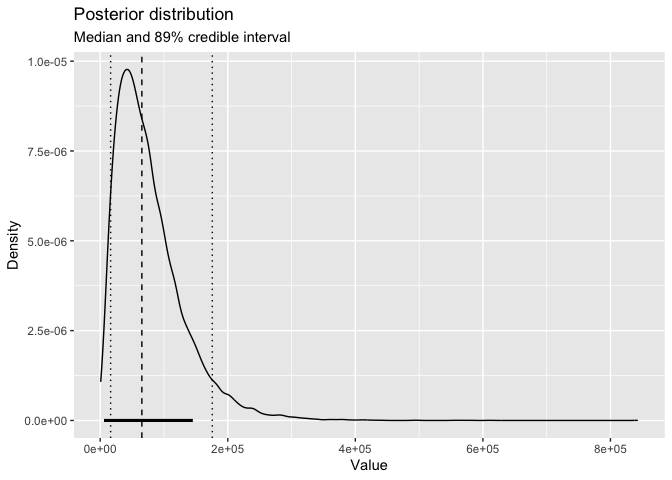

This R package helps you make probabilistic estimates using the Fermi method. It allows you to break down complex problems into smaller, manageable variables and calculate the probability distribution of the outcome using Monte Carlo simulations.
Whether you’re estimating market size, the potential impacts of a policy change, or the number of piano tuners in Chicago, this tool provides a rigorous yet accessible way to handle uncertainty.
Installation
You can install the development version of fermi from GitHub with:
# install.packages("pak")
pak::pak("humaniverse/fermi")Example
Let’s say you want to estimate the annual number of dwelling fires in England. You can decompose this problem as follows:
where number of dwellings can be further decomposed into:
You would then express your beliefs about each component using probability distributions (priors), and use the fermi package to simulate the overall distribution of dwelling fires:
library(fermi)
# ---- Priors ----
# Population of England, which we'll judge to be between 54 and 56 million with 80% credibility
england_pop_prior <- expert_gamma_prior(
q = c(5.4e7, 5.6e7),
p = c(0.1, 0.9)
)
# Average number of people in a household, judged to be between 2 and 3.2 with 80% credibility
hh_size_prior <- expert_normal_prior(
mean = 2.4,
lower = 2.0,
upper = 3.2,
level = 0.8
)
# Risk of dwelling fires, judged to be between 0.01% and 0.06%, with 80% credibility
fire_rate_prior <- expert_beta_prior(
q = c(0.001, 0.006),
p = c(0.1, 0.9)
)
# ---- Fermi simulation ----
fermi_res <- bf_fermi_simulate(
components = list(
pop = england_pop_prior,
hh_size = hh_size_prior,
p_fire = fire_rate_prior
),
# This is where we define how the components combine to give the final estimate
fun = function(pop, hh_size, p_fire) {
(pop / hh_size) * p_fire
},
n_draws = 20000
)
# Summarise and plot
posterior_summary(fermi_res, cred_level = 0.89)
#> Posterior summary
#> Credible level: 89 %
#> Median : 65294.03
#> CI : [16335.58, 175730.8]
#> HDI : [5916.407, 145177.3]
plot_posterior(fermi_res, cred_level = 0.89)